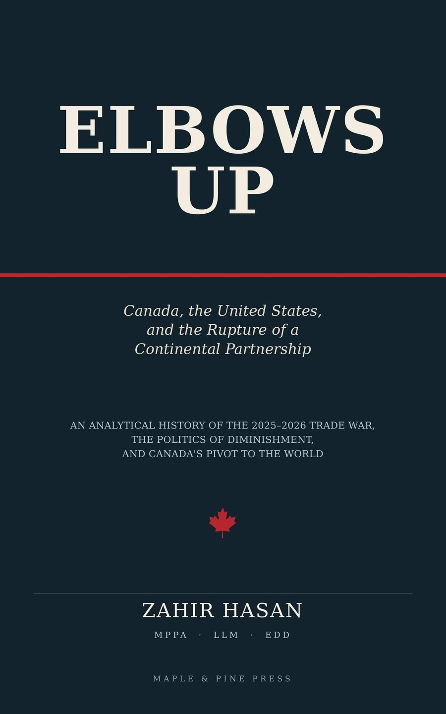

Elbows Up
Canada, the United States, and the Rupture of a Continental Partnership

The tariffs were justified by a number that was wrong by a factor of ten.
Between January 2025 and August 2026, the United States imposed the most severe tariff regime on Canadian goods of the postwar era, saw its legal foundation struck down by its own Supreme Court, rebuilt it within four days, and then reached back ninety-six years to invoke a provision of the Tariff Act of 1930 that no president had ever used. Throughout, the President of the United States said publicly that Canada should cease to exist as a country.
Elbows Up is the first full account of that rupture, and it is built entirely from primary sources: Statistics Canada, the Bank of Canada, the Parliamentary Budget Officer, the U.S. Census Bureau, the Energy Information Administration, the Federal Reserve, the Congressional Research Service, and the Supreme Court itself.
Its central finding is arithmetic. The United States did not subsidize Canada by $200 billion a year. The combined goods-and-services deficit in 2025 was roughly $20.6 billion; seven one-hundredths of one percent of American output. Strip out a single commodity, heavy crude oil sold to American refiners at a structural discount, and the United States ran a surplus with Canada of roughly $64 billion.
Dr. Zahir Hasan states his standpoint openly and then argues from evidence an opponent cannot dispute. He concedes Canada's thirty years of defence free-riding, the indefensible administration of its dairy quotas, and the uncomfortable fact that Canada's celebrated export diversification was, in 2025, largely the price of gold.
What emerges is not a lament. It is a reckoning; with Washington, and with a country that knew its own vulnerability in detail and would not act on it until somebody made acting unavoidable.
Includes: a full chronology of the trade war, ten data tables, a glossary, and complete APA references.
Ebook and paperback · Maple & Pine Press
- Author
- Dr. Zahir Hasan
- Publisher
- Maple & Pine Press, Tokyo
- List
- Politics, Law & International Affairs